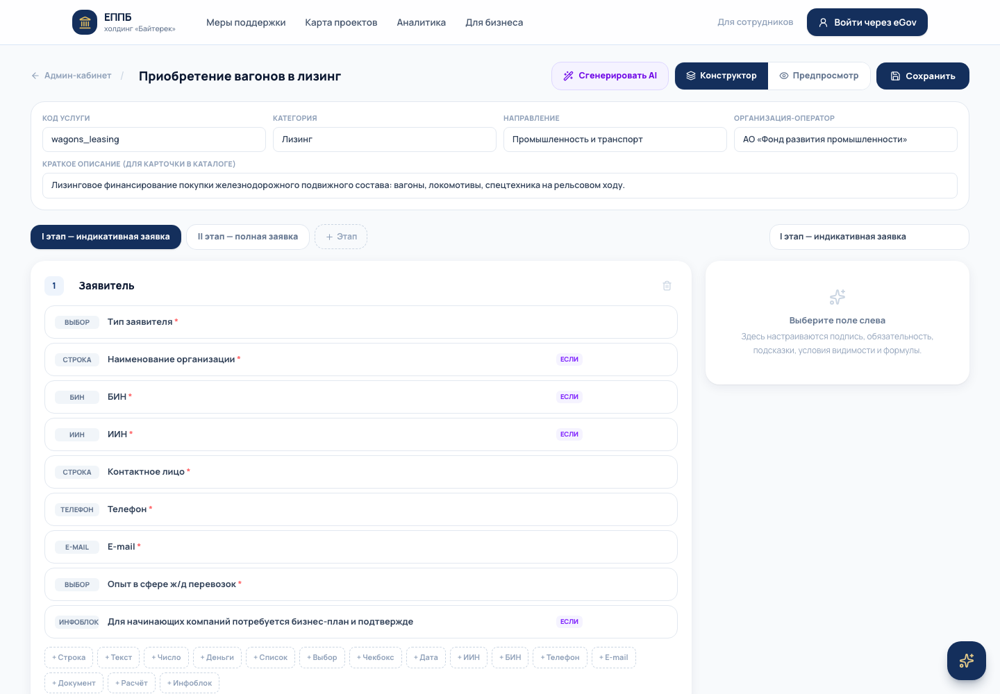
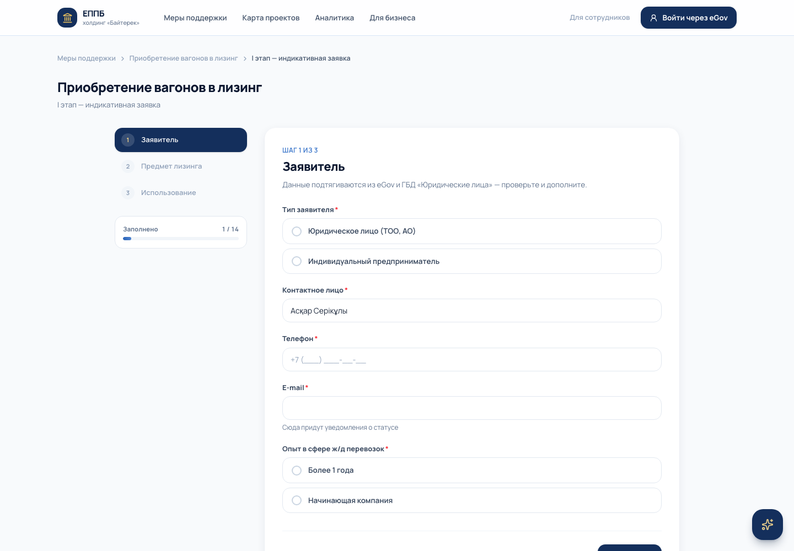
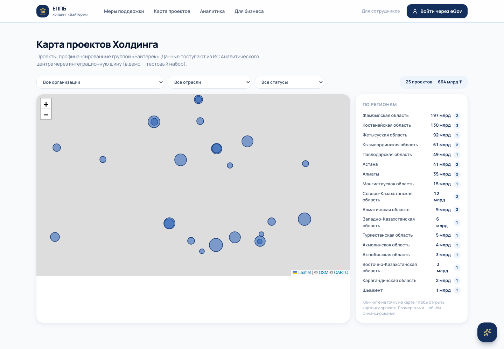

MVP платформы на базе универсального no-code конструктора услуг.
Услуга Холдинга — это данные, а не код.
Плоские формы без шагов и ветвлений: у полей действующего портала condition = null, rules = null. Пользователь видит все вопросы сразу — даже нерелевантные.
Кнопка «Подать заявку» по сложным услугам — внешний редирект в систему дочерней организации. У каждой — своя. Единого кабинета и сквозных статусов нет.
Условия финансирования вставлены изображениями: не ищутся поиском, не читаются с телефона. Терминология без объяснений: «КТ/БВУ/МФО/РИЦ», «ГЭСВ».
Главное: каждая новая мера поддержки требует отдельной разработки. Запуск услуги = проект с программистами.
Каждая мера поддержки описывается декларативной схемой: этапы → шаги → поля → условия видимости → формулы → документы. Один движок рендерит её и предпринимателю, и автору услуги.
Публикация из конструктора — услуга сразу в каталоге, поиске, AI-подборе и личном кабинете.
Обе контрольные услуги конкурса — записи в БД, собранные конструктором, а не страницы в коде.
Движок условий и формул общий: сервер повторяет проверки по той же схеме. Без расхождений.

«Хочу купить 20 полувагонов» → AI-помощник находит меру поддержки, объясняет условия простым языком и ведёт к подаче. Доступен на каждом экране.
Вставьте текст программы или НПА — AI построит черновик формы: шаги, поля, ветвления, расчёты, документы. Автору остаётся доработать и опубликовать.
Подсказки в полях, предзаполнение из eGov и ГБД, валидация на каждом шаге — меньше ошибок и возвратов «на доработку».
Провайдеро-независимый слой: OpenAI / Anthropic по ключу в конфигурации + rule-based фолбэк — демо работает даже без внешнего AI. Не дублирует действующий чат-бот Холдинга: AI встроен в клиентский путь и конструктор.

I этап: индикативная заявка (3 шага, 20+ полей). Ветвление по типу заявителя, типу подвижного состава (цистерны → вопрос о грузе), опыту компании. Расчёт стоимости проекта, аванса и финансирования формулами схемы.
II этап открывается после предодобрения: финансовое состояние, обеспечение, документы, подписание ЭЦП.
Ветвление по типу заёмщика: прямой заёмщик видит ставку 5% и поля про поголовье, КТ/БВУ/МФО — ставку 1,5% и отчёт о портфеле. Условия объяснены инфоблоками простым языком.
Разный состав документов по направлениям (откормочная площадка / птицефабрика) — тоже условиями схемы.
Жизненный цикл виден в личном кабинете: подача → рассмотрение в BPM (мок) → предодобрение → II этап → одобрение. Статусы, история, уведомления, документы — в одном месте.

Вход по OAuth-сценарию: в демо — имитация, в проде — idp.egov.kz. Профиль предзаполняет формы.
Ввод БИН/ИИН → лукап через шину → название компании и ОКЭД подтянулись в заявку.
Заявка передаётся оператору; обратный поток статусов виден в ЛК. ЕППБ не заменяет BPM — только клиентский путь.
Подписание пакета документов II этапа — сценарий NCALayer / eGov mobile, зафиксировано в истории заявки.
Все интеграции изолированы в адаптерах /api/integrations/* — замена мока на реальную шину Холдинга не трогает ни конструктор, ни клиентский путь. CRM-функциональность не дублируем — портал стыкуется с единой CRM Холдинга.
Автор собирает схему (AI даёт черновик), проверяет в предпросмотре, публикует. Без релизов и деплоев.
Мультиоператорность заложена в модель: услуга принадлежит организации, статусы приходят из её BPM.
Next.js 16 + общий движок условий/формул/валидации на клиенте и сервере. SQLite в MVP → PostgreSQL в проде заменой слоя данных.
Предпринимателю — одно окно и понятный путь.
Холдингу — запуск новых мер поддержки за день, а не за квартал.